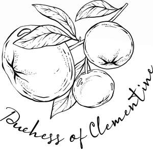

Trade Mark Journal No.2026/008 20 February 2026
UK00004335569 4 February 2026 (24,35)

- Class 24
- Textiles; Textiles and substitutes for textiles; Textiles for furnishings; Textile fabrics; Textiles for upholstery; Tablecloths of textiles; Non-woven textiles; Viscose textiles; Polyester textiles; Handkerchiefs of textiles; Tapestries of textile; Textile fabrics for the manufacture of clothing; Textile fabrics for use in manufacture; Textile fabrics for use in the manufacture of furniture; Household textiles; Towels of textiles; Textile fabrics for lingerie; Textile fabrics for use in the manufacture of sportswear; Textile fabrics for use in the manufacture of towels; Textile fabrics for use in the manufacture of bedding; Non-woven textile fabrics; Quilts of textile; Textile fabrics for use in the manufacture of curtains; Textile tablecloths; Tablecloths of textile; Honeycomb materials [textiles]; Textile fabrics for use in the manufacture of pillowcases; Patterned textiles for use in embroidery; Bedroom textile fabrics; Tablemats of textile; Coated textiles; Fabrics being textile piece goods; Furniture coverings of textile; Coverings (Furniture -) of textile; Fabrics being textile piece goods for use in embroidery; Fabrics being textile piece goods for use in tapestry; Textiles made of wool; Textile fabrics in the piece; Textile fabrics for use in the manufacture of beds; Textile fabric; Textiles made of cotton; Textiles made of linen; Textile fabrics for use in the manufacture of sheets; Textile goods for use as bedding; Waterproof textile fabrics; Fabrics for textile use; Handkerchiefs of textile; Textile handkerchiefs; Woollen fabrics; Rubberized textile fabrics; Curtains of textile; Textile fabrics for making into linens; Textile goods, and substitutes for textile goods; Textiles for food wrapping; Towels of textile; Towels [textile]; Towels [of textile]; Fabrics being textile piece goods for use in patchwork; Textile napkins; Textile handkerchieves; Hand-towels made of textile fabrics; Curtains made of textile fabrics; Textile fabrics for making up into household textile articles; Serviettes of textile; Textile serviettes.
- Class 35
- Online marketing; Online business networking services; Online retail services relating to jewelry; Business marketing services; Online retail store services relating to clothing; Online retail store services in relation to clothing; Online retail services relating to handbags; Online retail services relating to cosmetics; Business marketing consulting services; Online retail services relating to clothing; Online retail services relating to luggage; Business management consultancy via the Internet; Online retail services for downloadable virtual clothing; Internet marketing; Online advertising; Providing online marketplaces for sellers of goods and or services; Online retail store services relating to cosmetic and beauty products; Business networking; Business consultancy; Promotion [advertising] of business; Business consultancy services; Advertising and marketing services; Business brokerage services; Retail store services in the field of clothing.
Ana Ines Amaya